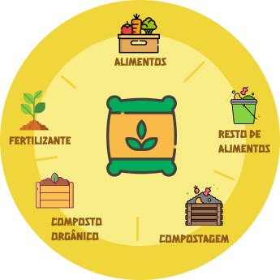
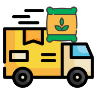
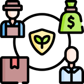

Confira abaixo as metas listadas pela ODS até 2030
Feira Livre
O programa ”Feira Livre”, é um espaço no nosso site onde estabelecimentos podem se cadastrar e anunciar seus alimentos de forma responsável, oferecendo produtos de qualidade próximos a validade com preços acessíveis. Não existe custo para efetuar o cadastro, em troca de que todo alimento inapropriado para consumo seja doado para a nossa instituição, dessa forma conseguiremos evitar ainda mais o desperdicio transformando este alimento em compostagem
Processo de compostagem
Envio da compostagem
Auxilio a pequenos produtores a manter uma agricultura sustentável
Estes alimentos que não estão próprios para consumo passarão por um processo de trituração incluindo fontes de proteínas para plantas e animais. A compostagem é repassada para pequenos produtores a baixo custo, incentivando a agricultura familiar
Happy Food
O projeto “Happy Food” é um programa de descontos em estabelecimentos parceiros (restaurantes, padarias, mercados, etc), onde parte do valor arrecadado será convertido em cestas básicas e outra parte em auxilio contra o desperdício.